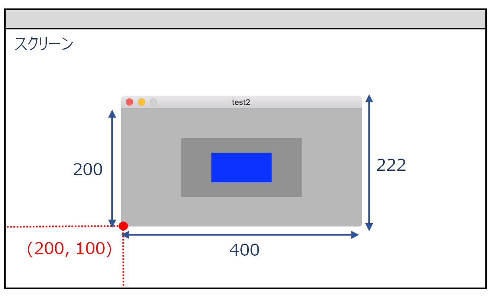
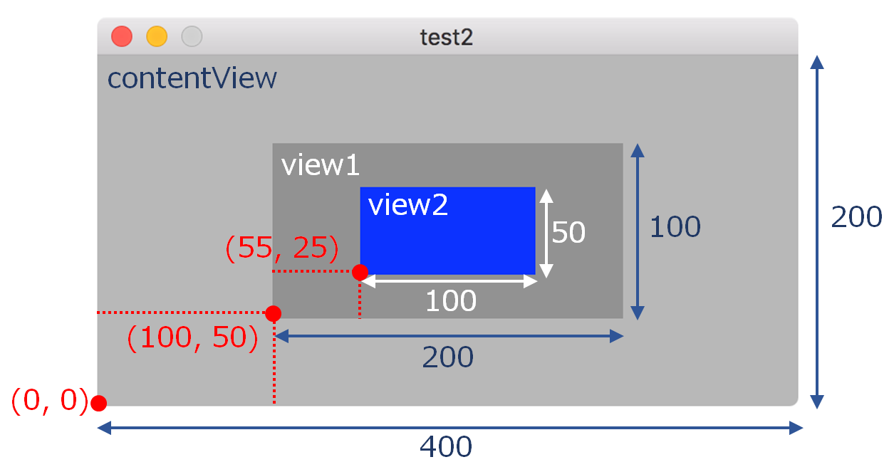
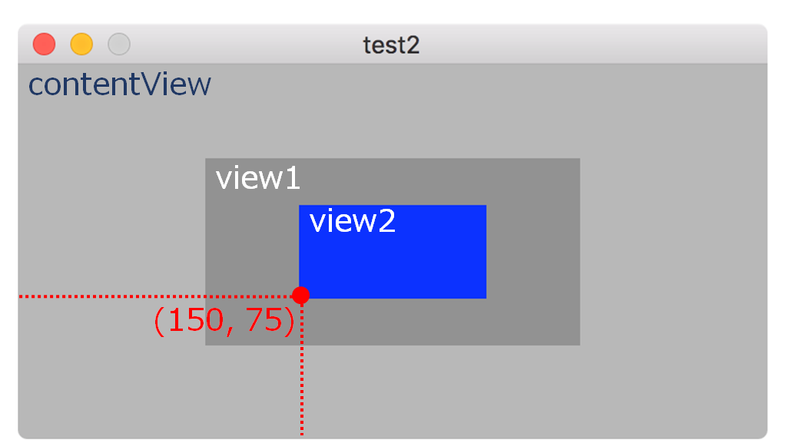
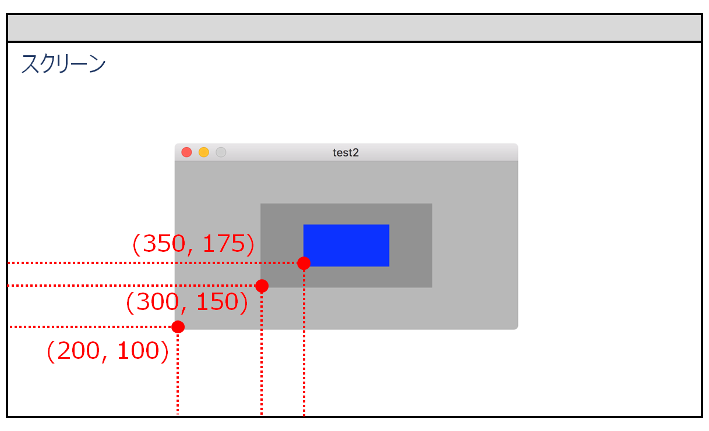

ビューの位置を取得する
ビューの矩形の位置の求め方について説明する。ユーザインタフェース構成要素は、スクリーン、スクリーンの中のアプリケーションウィンドウ、ウィンドウの中のビューからなる。それぞれ位置情報の取得方法は異なる。
スクリーン上のウィンドウの位置
スクリーン上のウィンドウの位置は NSWindowオブジェクトのconvertToScreenメソッドにより得ることができる。
引数にコンテントビューのframeプロパティを指定して実行すると、戻り値のNSRect構造体のorignプロパティにスクリーン上の座標が返ってくる。

ウィンドウの位置を求める
コンテントビューのスーパービュー
ウィンドウの位置と大きさとは、実際にはコンテントビュー位置と大きさのことである。また、コンテントビューのスーパービューは、コンテントビューにタイトルバーの高さ(通常22ピクセル)を含めたビューのことである。
ウィンドウの中のビューの位置
ビューの位置と大きさはビューのフレーム(frame)プロパティに保持される。コンテントビューの位置は原点（0,0）となり、コンテントビューに含まれるビューの位置はこの原点からの相対位置で表される。ビューが階層化されている場合、あるビューの位置はそれを保持するビュー（superView）が基準となる。例でいえば青いビュー（view2）の位置の座標は、濃いグレーのビュー（view1）の原点からの相対位置となる。

階層化されたビューの位置の座標を、ある特定のビューからの相対位置に変換するには、NSViewクラスのconvertメソッドを利用する。

次のコードは、階層化されているビュー view2のフレームの位置をコンテントビューを基準にしたものに変換している。コードの意味はview1が基準となっているview2の原点の座標を、コンテントビューを基準にしたものに変換せよということ。
ビューの boundsプロパティ
boundsプロパティは、ビュー位置を原点（0, 0）として保持するものである。
ビューの位置をスクリーン上の位置に変換する

スクリーン上のコンテントビューの位置と、コンテントビュー上の特定ビューの位置を合成する。次のコードは、それぞれのビューの位置をスクリーンの原点からの相対位置に換算したものである。